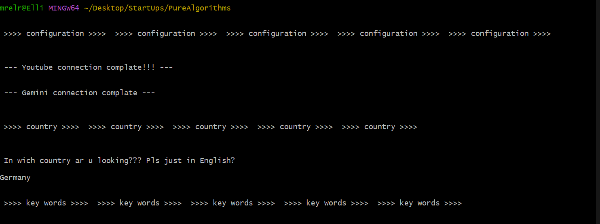
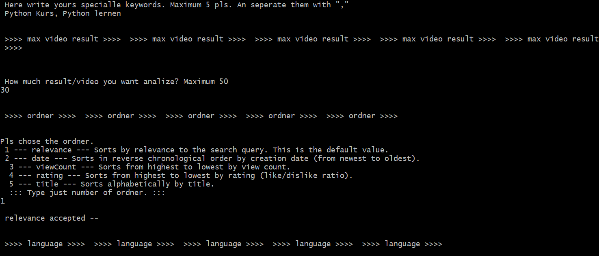
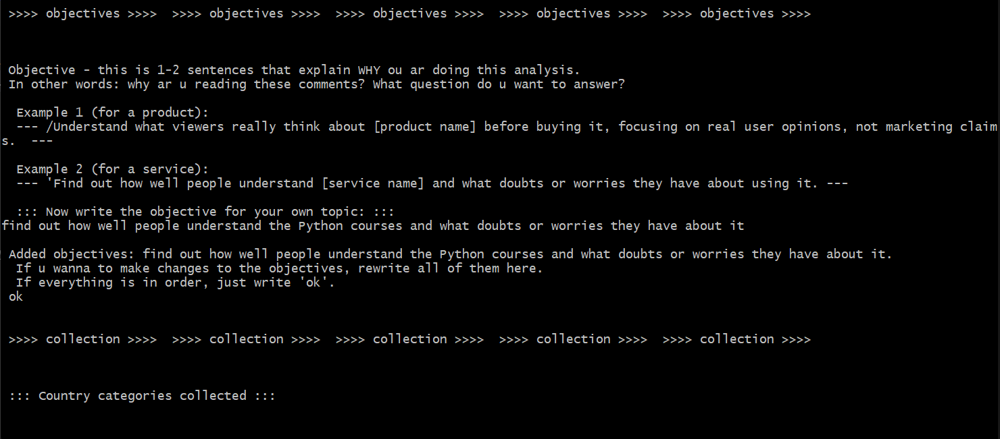
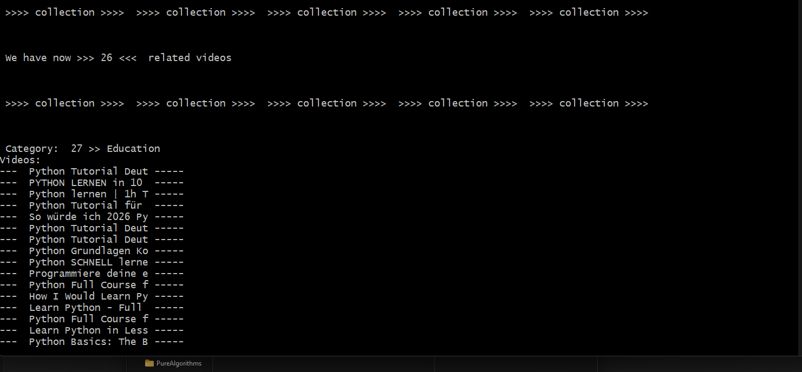
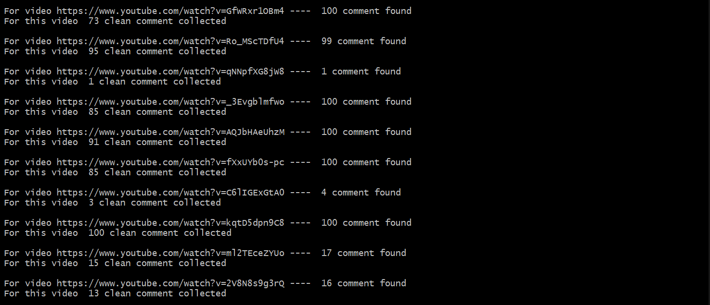
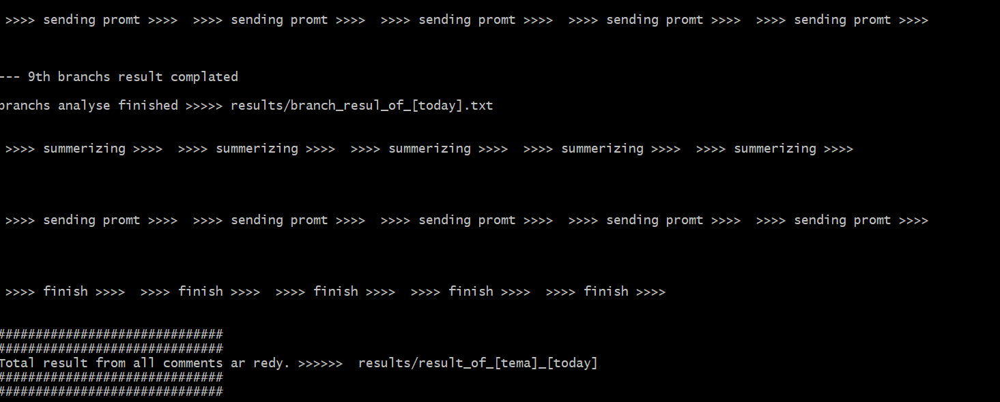

Youtube Comment Analyse / Terminal-APP
Collection of relevant user comments from YouTube videos on a specific topic and their analysis using the Gemini AI.
GitHub Repo: Elli55/youtube_comment_analyse
First, the algorithm performs a YouTube search using the 'keywords' it has received from you. It then shares the relevant video results with you and also keeps them ready in a 'stack'. After, it analyses the categories to which these videos belong and shows them to you. This is because sometimes the same keyword can yield videos from very different and unrelated categories. If you wish, you can remove certain categories from the search. After this, the comments for the videos in the remaining categories are collected. The collected comments then undergo several stages of logical cleaning to ensure that unnecessary or meaningless comments do not interfere with the AI's analysis. The cleaned-up comments are sent to the AI in batches of 500 , and the result of each 'branch' is written to a text file. You can see the address and name of that file in the terminal. After this, the txt file containing the results of all the branches is sent to the AI again, and the final overall result is analysed. It should be noted that all prompts sent to the AI are pre-templated and are fully customised to your topic with a few parameters provided by you.
To launch the application, you simply need to run the main Python file. After that, questions will appear in the terminal, giving you the chance to select the 'keywords', 'country', 'language', 'categories', 'objects', and 'topic'. With all these inputs, the algorithm automatically gathers the most suitable comments for you and also prepares the most optimal prompt for the AI.
Below, I am sharing a small sample analysis and the final result obtained from it. I have tried to analyse the opinions of YouTube users in Germany regarding Python tutorials on YouTube. The result is below.






# Executive Summary
This qualitative study synthesizes branch-level analytical reports examining thousands of YouTube comments on Python tutorial videos. The overall sentiment is overwhelmingly positive (typically ranging between 60% and 78% across branches), driven by deep gratitude for comprehensive, unpaywalled, long-form educational content. Learners span a remarkably broad demographic—from teenagers and university students to older adults, retirees, and career changers—who frequently contrast these free tutorials favorably against expensive bootcamps and rigid institutional classes.
While baseline public awareness and understanding of foundational concepts (such as variables, loops, functions, and lists) are high, learners consistently encounter friction. Major challenges include initial environment setup (e.g., path configurations, terminal errors, IDE discrepancies), moving from abstract syntax to real- world applications, and the psychological hurdle of "tutorial hell." In the German- speaking context, users utilize these tutorials to supplement formal academic instruction (school informatics and university exams) and professional IT retraining (*Umschulung*). Opportunities lie in creating structured multi-tier roadmaps, end-to-end practical projects, and integrating AI as a supplementary learning assistant.
# Overall Public Awareness
Public awareness and understanding of Python tutorials are generally high regarding introductory mechanics, though proficiency varies significantly across user groups.
- **Common Areas of Knowledge:** Viewers consistently grasp foundational programming concepts, including variables, strings, arithmetic operations, basic conditional statements (`if/else`), `for`/`while` loops, functions, and lists. Many successfully complete interactive mini-projects like text-based games (tic-tac-toe, guessing games) and calculators.
- **Common Misunderstandings:** Confusion rarely stems from basic logic, but rather from technical execution. Beginners frequently struggle with environment setup (e.g., command-line errors, path variables, interpreter configurations), library dependency management (e.g., `pip`, virtual environments), and mixing incompatible data types (e.g., concatenating strings and integers). Some advanced learners also confuse syntax or file types (e.g., mistaking Windows batch files for Python).
- **Frequently Used Terminology:** Commenters actively employ technical terms taught in the lessons, such as *Variablen, Schleifen (loops), Listen, Funktionen, OOP (Objektorientierte Programmierung), print, input, int/float, VS Code, PyCharm, Pandas, NumPy,* and *Matplotlib*.
---
# Overall Information Needs
Viewers express consistent information needs that bridge the gap between basic syntax and applied competence. These are grouped into three primary categories:
1. **Practical Guidance and "Bridge to Reality":** Learners frequently ask how to move beyond console scripts. They want to know how to build real-world applications, deploy standalone software, automate office tasks (e.g., handling messy Excel sheets), or connect Python to databases and APIs.
2. **Setup and Troubleshooting Support:** Users seek immediate technical assistance for installation errors, command-line routing failures (e.g., redirection to the Microsoft Store), missing editor extensions, and package import errors.
3. **Structured Learning Roadmaps:** Viewers request sequential guidance on what to study next after mastering basics, particularly when targeting specialized career paths like Data Science, Artificial Intelligence, or Machine Learning.
---
# Overall Sentiment
The emotional landscape of the comment sections is characterized by high engagement and goodwill:
- **Positive Attitudes (~60%–78%):** Driven by profound gratitude for free, high-end educational resources, praise for instructors' clear pacing and pedagogical clarity, and celebration of personal milestones (passing exams, securing jobs).
- **Information-Seeking Behavior (~12%–30%):** Represented by technical questions, error-debugging requests, syntax clarifications, and roadmap inquiries.
- **Mixed Reactions (~3%–6%):** Blends admiration for the content with ^ personal frustration over coding complexity, fast pacing, or minor tool discrepancies.
- **Neutral Attitudes (~3%–15%):** Consists of timestamps, study logs, attendance notes, and organizational indexes.
- **Negative Attitudes (<1%–10%):** Primarily focused on setup roadblocks, technical frustration, or criticism of structural issues (e.g., audio problems or broken links).
---
# Cross-Branch Theme Synthesis
The data reveals several dominant themes that appear consistently across multiple branch reports:
1. **Appreciation for Free, High-Quality Education**
- *Consistency:* Frequently observed across all branches.
- *Evidence:* Hundreds of comments praising creators for offering multi- hour, ad-free or low-friction courses that outperform expensive traditional alternatives.
- *Why it matters:* Highlights widespread consumer fatigue with ommercialized education and strong market preference for accessible digital resources.
2. **Career Transitions and Lifelong Learning**
- *Consistency:* Frequently observed across multiple branches.
- *Evidence:* Adult learners, career changers, and older adults (including individuals in their late 50s, 60s, and 70s) explicitly share goals of pivoting into tech, data science, or automation.
- *Why it matters:* Proves that Python education serves as a major catalyst for socioeconomic mobility across diverse age demographics.
3. **The "Bridge to Reality" and Project Application**
- *Consistency:* Frequently observed across multiple branches.
- *Evidence:* Viewers constantly inquire about how to turn basic scripts into functional programs, apps, or data pipelines, noting the difficulty of escaping "tutorial hell."
- *Why it matters:* Identifies the critical juncture where passive learners drop off or transition into active developers.
4. **Academic Rescue and Institutional Supplementation**
- *Consistency:* Observed in several branches.
- *Evidence:* Students use online tutorials to pass school classes (*Informatik*), university exams, and professional retraining programs (*Umschulung*).
- *Why it matters:* Illustrates systemic gaps in formal educational institutions that self-directed online videos successfully fill.
5. **Active Peer Support and Code Sharing**
- *Consistency:* Frequently observed.
- *Evidence:* Comment sections transform into organic peer-support forums where users share timestamps, debug code snippets, and provide alternative syntax.
- *Why it matters:* Demonstrates strong community-driven engagement that enhances the primary educational material.
---
# Germany Context
Factors specific to the German-speaking context, supported by multiple branch reports, include:
- **Integration with Formal German Education and Retraining:** Learners frequently use online tutorials to manage academic stress in German schools and universities, or as a psychological and practical companion during formal state-supported professional retraining (*Umschulung* to *Fachinformatiker/in*).
- **Localized Technical and Administrative Hurdles:** German-speaking users discuss local file path management across operating systems (such as Linux distributions), Windows command prompt configurations, and regional hosting platforms.
- **Academic Urgency:** Comments reveal regional usage patterns where tutorials serve as intensive emergency crash courses (*Klausurvorbereitung*) ahead of imminent institutional examinations.
---
# Challenges
The major barriers repeatedly reported by learners are ranked by consistency:
1. **Environment Setup and Infrastructure Friction (High Consistency):** Installing Python, configuring path variables, resolving terminal errors, and managing code editors (VS Code, PyCharm) create early roadblocks.
2. **Conceptual Escalation and Logic Gaps (Moderate Consistency):** Moving from simple variables to complex structures like loops, lists, and object-oriented programming (OOP) causes cognitive overload.
3. **The Application and Deployment Gap (Moderate Consistency):** Beginners struggle to bridge the gap between running text scripts in a console and deploying standalone software, web apps, or automated workflows.
---
# Opportunities
The most frequently mentioned opportunities ranked by evidence strength:
1. **Creation of End-to-End Practical Playlists (High Consistency):** Strong demand exists for structured, multi-tier roadmaps that guide learners from basics directly into domain-specific applications (Data Science, AI, Web Scraping).
2. **Targeted Workflow Automation Guides (Moderate Consistency):** Opportunities to teach practical office automation, such as programmatically consolidating messy Excel workbooks.
3. **AI-Augmented Learning Workflows (Moderate Consistency):** Learners actively integrate generative AI as a personalized coding mentor, presenting an opportunity to guide students on how to use AI safely without skipping foundational logic.
---
ä# Overall Conclusions
1. **Free Long-Form YouTube Courses Drive Exceptional Engagement:** High- quality, unpaywalled instructional videos foster deep loyalty and high completion motivation. (**Strong**)
2. **Python Appeals to a Broad, Non-Traditional Demographic:** The audience extends far beyond traditional tech students to include older adults, retirees, and career changers. (**Strong**)
3. **Environment Setup is the Primary Operational Barrier:** Technical friction during initial tool installation causes more early drop-off than core programming logic. (**Strong**)
4. **Interactive Practice Is Vital for Retention:** Mini-exercises and visual coding tasks significantly boost user confidence and comprehension. (**Strong**)
5. **Tutorials Serve as Vital Supplements to Formal Education:** Learners heavily rely on online videos to remedy shortcomings or burnout in formal schooling, universities, and German *Umschulung* programs. (**Strong**)
6. **Persistent Gap in Application Deployment:** Beginners lack clear pathways to transition from text-based console scripts to executable real-world applications. (**Strong**)
7. **Active Community Self-Organization:** Comment sections organically function as peer-support and troubleshooting forums. (**Strong**)
8. **High Demand for Domain Specialization:** Learners want immediate clarity on whether they need deep software engineering skills or strictly domain-specific libraries (e.g., Pandas/NumPy). (**Moderate**)
9. **AI Integration is Transforming Self-Study:** Students increasingly use LLMs alongside video courses to debug and explain code step-by-step. (**Moderate**)
10. **Localized Academic Crises Drive Usage:** In German-speaking segments, tutorials are systematically utilized for urgent exam preparation (*Klausurvorbereitung*). (**Moderate**)
---
# Research Limitations
The findings of this qualitative report are subject to specific limitations inherent to the dataset:
- **YouTube Audience Bias:** The dataset captures only individuals who are digitally literate, motivated enough to watch video tutorials, and inclined to leave public comments, excluding silent viewers or those without internet access.
- **Self-Selection Bias:** Commenters are disproportionately polarized— either intensely grateful for successful learning experiences or motivated to write by specific technical frustrations.
- **Limited Demographic Information:** Detailed demographic data (such as exact age distribution, socioeconomic background, or professional status) is entirely self-reported through qualitative expressions rather than verified metrics.
- **Language and Geographic Skew:** While German-specific contexts emerge clearly, the dataset is predominantly global and English-centric, limiting exhaustive regional comparisons.